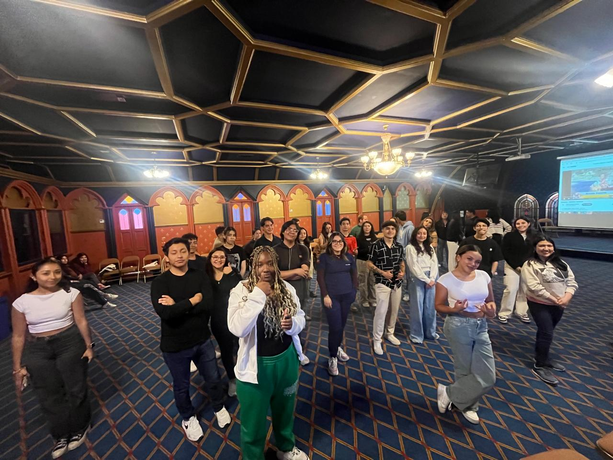
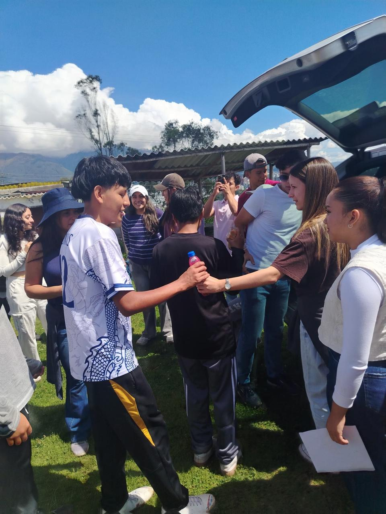

Considero que la asertividad es uno de los conceptos más idealizados que he llegado a percibir en mi entorno social. El hecho de tener esta capacidad de decidir, establecer nuestros límites claros, mantener una expresión honesta y fomentar el respeto mutuo, a veces se percibe como algo imposible de conseguir. Incluso, puede parecer algo que nos aleja de nuestra naturaleza humana, partiendo del punto de vista de que nadie es perfecto. Para romper este estigma, he procurado transmitir mi perspectiva frente a esta idealización. A mi modo de ver, una persona sí puede adquirir y practicar estas habilidades con gran amplitud. Por supuesto, debemos considerar que la búsqueda de la asertividad es un proceso dinámico: es el camino donde una persona va aclarando cada vez más sus límites, mejora su forma de expresarse y toma decisiones de manera autónoma, siempre en conjunto con sus creencias y pensamientos.
Una vez aclarado esto, pienso que el respeto dentro de la asertividad (entendida como una habilidad social y comunicativa) empieza por nosotros mismos. Inicia al cuestionarnos qué tanto valoramos nuestras propias decisiones y si respetamos nuestros pensamientos, para poder establecer, en consecuencia, un sistema sano de intercambio de información con los demás. Aquí radica la misma importancia de reconocer que cada individuo de nuestro entorno es también autor y defensor de sus propias decisiones, pensamientos y acciones. Por lo tanto, resulta fundamental exteriorizar este respeto hacia el otro.

Cuando logramos consolidar este ambiente de respeto en torno a lo que somos y cómo se define nuestra sociedad, podemos empezar a construir equipos de trabajo verdaderamente asertivos. En estos espacios, la comunicación fomenta nuevas ideas, la empatía abre las puertas para comprender mejor a los demás, y el intercambio de comentarios constructivos ayuda al crecimiento de cada individuo. Es valioso saber que la dinámica de estos equipos puede aplicarse y funcionar en cualquier área social de nuestro entorno, abarcando desde el rendimiento en los deportes hasta la gestión masiva de proyectos.
Las fotos presentadas en el blog, son una representación visual de los conceptos discutidos, donde grupos con gran sertividad lograron llegar al corazón de varios niños, que viven en una situación económica y social difícil.
¿Qué te pareció? ¡Deja tu comentario!